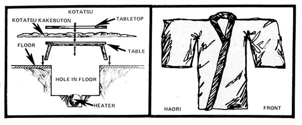
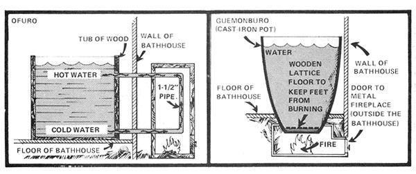

The Japanese, except for those living on one far northern island, have always-to my knowledge--lived in unheated houses. To do this, they've developed many beautiful techniques for keeping warm techniques which make a Japanese home quite different from what most Americans might imagine.
Japanese houses, it is said, are designed to be comfortable in hot weather while Western homes are constructed for comfort during cold weather. This may be true, but the average temperatures in Japan cover roughly the same range as those of the United States. Match degree against degree, for example, and you'll find living in Tokyo very similar-temperature-wise-to residing in Washington, D.C.
The traditional Nipponese home and its inhabitants, in other words, have happily survived many centuries in a climate not very different from our own. And that house and the people who live in it have done so without central heat.
How can this be? Can unheated houses really be comfortable?
Yes they can. I grew up in Japan and was fortunate enough to always live in traditional homes. I love them dearly, in fact, and much prefer them to the centrally heated "ovens" so typical of our culture. Perhaps-if I describe a typical winter's day as we lived it in our Japanese house-you'll understand my feelings.
Since we were a motherless family, we always had a Japanese maid to run our residence and raise us children. So my day began when Yukiko-san (her name meant "snowchild") poked her head in my bedroom door (her bedroom too) and gently said, "Shichiui desu yo." ("It's seven o'clock.")
That was the signal for me to slip out from under the snug kakebuton or Japanese quilt. Now a Japanese quilt is quite different from an American one. When constructed of a combination of modern and traditional materials as it now usually is, it consists of a very light nylon covering over each side of aloft (or thickness) of approximately four inches composed of untold layers-of cotton. This quilt is not sewn through like a Western one would be, either. Instead, only an occasional thread-which is not pulled tight-runs from the nylon on one side, through the filling, and to the other nylon cover.
What this produces essentially is a big, fat, warm and wonderful, rectangular Polarguard sleeping bag which is spread over your futon (or bed). And the futon is just as uncomplicated as the kakebuton: the bed is simply a padfilled with foam rubber or cotton-which folds into a neat three-sectioned pile for daytime storage.
Getting out of bed, of course-just as it always has been in any unheated house anywhere-was the toughest task of the day. I was never really comfortable again until 1 had dressed and given my body enough time to warm the clothes I put on. Which, maybe, wasn't as bad as it sounds since I usually accomplished the job with some speed and agility!
And yes: As you might have suspected, we did wear more sweaters and other such garments indoors than folks need inside a centrally (over)heated U.S. home. You can look upon our need for the extra layers of clothing as a nuisance if you choose but I found it quite pleasant to wear them. Besides that, as I'm sure you know, medical authorities almost unanimously agree that the reduced temperature change encountered when moving from a cool house to frigid outside winter weather is much less of a shock on your body than the change encountered as you move from a hot house to the same
outside weather. You'll probably stay much healthier, in other words, if you spend the winter going back and forth from a 50° F building to 30° outside conditions than if you go back and forth between a 70° building and 30° outside weather.
So much for getting up and getting out in the mornings. It wasn't until I came back home from school during the afternoons that I really used traditional Japanese ideas for staying warm with little energy. For, as soon as I returned from my lessons, I'd generally join the family and Yukikosan who were already snuggled into the kotatsu. (Those readers who've spent any time in Japan are probably having fond memories of their own kotatsu right about now.)
A kotatsu is a heater that's placed on the floor with a low table over it. A special quilt called-what else?-a kotatsu kakebuton is draped over the top of the table and ,a second top rests on the quilt. That's the way poor people do it anyway. Wealthier folks frequently have a special space for their legs recessed into the floor under the table and a second-smaller and deeper-hole for the heater located in the center of the first one.
However it's constructed, the kotatsu is the center of a Japanese family's activities during cold weather. When we lived in Japan, we spent most of our time in the winter closely grouped around our little (about three feet by three feet) square table playing footsie in the kotatsu and being careful not to lift the accompanying kakebuton so as to let a draft of cold air underneath.
Such a life requires compatibility, to say the least. And the Japanese do have a remarkable ability to remain pleasant in crowded conditions that would drive many Occidentals completely berserk.
Think about it: It's too cold to go anywhere. So you spend every afternoon snuggled up with your whole household (which typically includes Java sparrows perched on your head and shoulders), doing your homework while everyone else is doing his or her thing all on the same three-foot-square table. It's obvious, under the circumstances, that you either become an extremely close-knit family or you go nuts or freeze. I think every family needs a kotatsu.
The heater for such a "warmth pit" can be either electrically or charcoal fired. The latter is still very common in Japan and the most common of all kotatsu charcoal burners is the hibachi. Not the squat, black barbecue that goes by the same name here in America. A real kotatsu hibachi more closely resembles a huge vase or flowerpot made, I suppose, of fired and kiln-glazed clay. They're quite beautiful.
These hibachis are fueled with charcoal dust and a small ring of the dust burns slowly-without flame-in the heater's middle. Various grates or tripods can be put over the fire, so that food may be cooked or water boiled on the hibachi. For the most part, a kettle of water is kept simmering on the unit to humidify the room.
One very strong word of warning is in order here: Do not get the idea that a simple, small, charcoal-fired hibachi is just the thing you need to heat your "standard", heavily insulated Western house. Such a burner gives off dangerous gases that can dissipate quite harmlessly from a relatively well-ventilated Japanese home but that same gas might well build up to lethal levels in your tightly sealed building, and asphyxiate you.
The floors of Japanese dwellings are traditionally made of wood and covered with tatami straw mats approximately one and a half inches thick. (The hole in the floor-if there is one-used for a kotatsu by those who can afford such refinements, is covered by a perfectly fitting wooden top and tatami mat during the summer.) In the winter, everyone I know in Japan puts newspapers between the straw mats and the underlying wood for extra insulation (the idea works exceedingly well). Year round, the tatami is springy and comfortable and wonderful to live on.
If Japanese homes are rather lightly constructed and, sometimes, better ventilated than we usually consider appropriate Nipponese clothes are certainly designed for winter comfort. Traditional garments-such as the haori, which resembles a short kimono-are constructed in the same layered manner as the kakebuton I've already described.
Common haoris come in various thicknesses (some are made of black silk and are primarily ornamental) and usually don't have as much loft as a kakebuton. They're heavier, however, and covered on the outside with cotton instead of nylon. The garments are worn both indoors and out, and some even have an extra space in the back for a baby. Lucky, warm baby!
And the haoris used in the winter are warm for a very simple reason: You need something to protect your back and shoulders when the lower half of your body is snugly heated by a kotatsu. That's if you're a man. Women-who are supposed to stick only their hands and knees under their host's kakebuton when they go visiting (Oh misery. Japan is not the place for a liberated lady.)-appreciate the haoris' ability to warm their backs, shoulders, and tucked-under toes even more.
Which explains how men, women, children-and babies-get comfortably through a cold Japanese day. And that brings us to late afternoon and the ofuro, or public bath.
(I don't really know what I'd choose as the absolutely best part of Japanese life if I had to make the choice, but the ofuro would surely make it into the finals. As a matter of fact, if I found myself back in Japan right this very minute, I know exactly what I'd do: make a beeline for the public bath.)
I hesitate to tell you how ofuros are built, because I'm not positively certain I know. So if there's a knowledgeable engineer-or anybody!-out there who can supply this information, please feel free to go right ahead. In the meantime, I am quite sure of how such a bath functions and I think 1 could construct one that would work so here, until we are all told better, is what I know about ofuros.
An ofuro can be built either inside your main house or in a separate building. (When I was two years old and we lived up north in Sendai, our bath was in a building of its own. And, believe it or not, the structure had so many missing wall boards that snow drifted into the steaming tub and the wind blew out our only illumination, a candle!)
I'm familiar with two types of ofuro, and both are splendid. There is
[1] the ordinary ofuro, which is a wooden tub heated from the outside, and
[2] the guemonburo, a huge iron pot with a fire under it. The second, by the way, was named after a criminal who was boiled to death as punishment which doesn't sound too bad when you're cold!
Ofuro water should be quite hot. Hot enough so that it takes you a while to get all the way in and leaves you good and red when you come out.
CAUTION: My husband says you should never take one of these hot baths after drinking because you can pass out from the combination of alcohol and extreme heat. Also, if you have a heart condition, there's a strong possibility that you shouldn't try the ofuro at all.
If you are up to the bath, though, you should begin by undressing and putting your clothes where they won't get splashed . in a separate room, if possible. Then, in the room which actually contains the ofuro (or in one immediately adjacent), begin your bath with the single piece of personal equipment that is absolutely essential: a pan or bucket. You should also have one of the cute little traditional dippers for filling the bucket with hot water from the ofuro and, if possible, a little stool about four inches high to sit on. The room in which you start your bath should be outfitted with a drain in the floor and-if it can be arranged-a spigot of cold water with which you can cool the ofuro, if that becomes necessary
Now Your a ready, Not to plunge into the big communal tub but to dip hot water into your personal bucket, wet your tenagui (a cross between a towel and a washcloth), soap up, and start scrubbing. Then rinse off by refilling your bucket with clean hot water and pouring it over you. It may be hard to take, but this first dose of the steaming liquid will make it easier a little later when you want to get into the big tub itself.
Wash and rinse again. Wash your hair, too, if you feel like it and rinse all over with hot water. The idea is to get all the dirt and soap off your body now so that you'll be absolutely cleaned and rinsed when you're ready to slip into the ofuro.
Ahhhhh. That's the good part. Slowly sinking into the big tub of steaming water and just soaking. It's customary to keep your hair, if it's long, pinned up and out of the water in a public bath. It's also customary not to wet your face at all-except to dab off the perspiration-while in the tub. I used to cheat on that last point, though, if I was at home instead of at a public bath.
When you're ready to get out of the ofuro, wash and rinse over the drain with your bucket all over again. Then climb back into the big tub and soak a second time. Each soak should last about five minutes if you're accustomed to taking these baths, less if you're not.
Finally, get out and wring your tenagui as dry as you can. Then towel off with it. Straighten everything for the next person, get dressed, and go on to bed or whatever. You'll be warm for at least a half hour and, if you're staying up for a while, you won't need as many sweaters as before.
When bedtime does approach, you'll want to know about one last item the Japanese use to make their winter lives comfortable in houses that lack central heat. This is the yutampo, which is something like a hot water bottle in shape and function but is made of metal and covered with cloth to keep it from burning when you press up against it. (I think the original yutampo was nothing but a suitably wrapped hot rock.)
Anyway, about 10 or 15 minutes before going to bed, fill your yutampo with boiling water. (Yukiko-san always did this for us, and we loved her for it!) Next, make sure your yutampo's lid and cover are secured and then stick the hot container between the sheets at the foot of your futon. The bed will be warm when you're ready to slip in and you'll have something nice to put your feet against as you drift off to sleep.
Oh, I'm so homesick!.
|
 |
 |
|